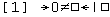

"There's nothing like eating hay when you're faint," the White King
remarked to Alice, as he munched away.
"I should think throwing cold water over you would be better," Alice
suggested: "--or some sal-volatile."
"I didn't say there was nothing better," the King replied.
"I said there was nothing like it." Which Alice did not
venture to deny.
In this section an attempt is made to describe how and why INTERCAL may be used; i.e., what it is like and what it is good for.
Shown below is a relatively simple INTERCAL program which will read in 32-bit unsigned integers, treat them as signed, 2's-complement numbers, and print out their absolute values. The program exits if the absolute value is zero. Note in particular the inversion routine (statements 6 through 14), which could be greatly simplified if the subroutine library (see section 7) were used.
A more detailed analysis of a program is made in section 8.
DO (5) NEXT
(5) DO FORGET #1
PLEASE WRITE IN :1
DO .1 <- '?":1~'#32768$#0'"$#1'~#3
DO (1) NEXT
DO :1 <- "'?":1~'#65535$#0'"$#65535'
~'#0$#65535'"$"'?":1~'#0$#65535'"
$#65535'~'#0$#65535'"
DO :2 <- #1
PLEASE DO (4) NEXT
(4) DO FORGET #1
DO .1 <- "?':1~:2'$#1"~#3
DO :1 <- "'?":1~'#65535$#0'"$":2~'#65535
$#0'"'~'#0$#65535'"$"'?":1~'#0
$#65535'"$":2~'#0$#65535'"'~'#0$#65535'"
DO (1) NEXT
DO :2 <- ":2~'#0$#65535'"
$"'":2~'#65535$#0'"$#0'~'#32767$#1'"
DO (4) NEXT
(2) DO RESUME .1
(1) PLEASE DO (2) NEXT
PLEASE FORGET #1
DO READ OUT :1
PLEASE DO .1 <- '?"':1~:1'~#1"$#1'~#3
DO (3) NEXT
PLEASE DO (5) NEXT
(3) DO (2) NEXT
PLEASE GIVE UP
INTERCAL's main advantage over other programming languages is its strict simplicity. It has few capabilities, and thus there are few restrictions to be kept in mind. Since it is an exceedingly easy language to learn, one might expect it would be a good language for initiating novice programmers. Perhaps surprising, than, is the fact that it would be more likely to initiate a novice into a search for another line of work. As it turns out, INTERCAL is more useful (which isn't saying much) as a challenge to professional programmers. Those who doubt this need only refer back to the sample program in section 2.1. This 23-statement program took somewhere from 15 to 30 minutes to write, whereas the same objectives can be achieved by single-statement programs in either SNOBOL:
PLEASE INPUT POS(0) ('-' ! '')
+ (SPAN('0123456789') $ OUTPUT)
+ *NE(OUTPUT) :S(PLEASE)F(END)
or APL:

Admittedly, neither of these is likely to appear more intelligible to anyone unfamiliar with the languages involved, but they took roughly 60 seconds and 15 seconds, respectively, to write. Such is the overwhelming power of INTERCAL!
The other major importance of INTERCAL lies in its seemingly inexhaustible capacity for amazing one's fellow programmers, confounding programming shop managers, winning friends, and influencing people. It is a well-known and oft-demonstrated fact that a person whose work is incomprehensible is held in high esteem. For example, if one were to state that the simplest way to store a value of 65536 in a 32-bit INTERCAL variable is:
DO :1 <- #0$#256
any sensible programmer would say that that was absurd. Since this is indeed the simplest method, the programmer would be made to look foolish in front of his boss, who would of course happened to turn up, as bosses are wont to do. The effect would be no less devastating for the programmer having been correct.